W30 · B16+B17
New captures require completed passed selectors. Historical actual-map files remain before context. W33 B12 source-byte proposal is historical context, never a new W33 capture.
- ipad W30 normal empty name and original icon choices: skipped selector; named PNG/AX absent
- ipad W30 normal selected original icon choice: skipped selector; named PNG/AX absent
- ipad W30 normal selected original color choice: skipped selector; named PNG/AX absent
- ipad W30 normal selected Duration and Distance input type: skipped selector; named PNG/AX absent
- ipad W30 normal long name valid Save and editor: skipped selector; named PNG/AX absent
- ipad W30 normal reopened custom category editor: skipped selector; named PNG/AX absent
- ipad W30 MAX empty name and original icon choices: skipped selector; named PNG/AX absent
- ipad W30 MAX selected original icon choice: skipped selector; named PNG/AX absent
- ipad W30 MAX selected original color choice: skipped selector; named PNG/AX absent
- ipad W30 MAX selected Duration and Distance input type: skipped selector; named PNG/AX absent
- ipad W30 MAX long name valid Save and editor: skipped selector; named PNG/AX absent
- ipad W30 MAX reopened custom category editor: skipped selector; named PNG/AX absent
- iPad Categories normal and MAX were Skipped before known closed native More; no iPad pass is claimed.
- At MAX text, selected input type is visually ellipsized; AX retains the full Duration + Distance value.
- Duo current-source capture pending; no hinge angle or four-profile pass inferred.
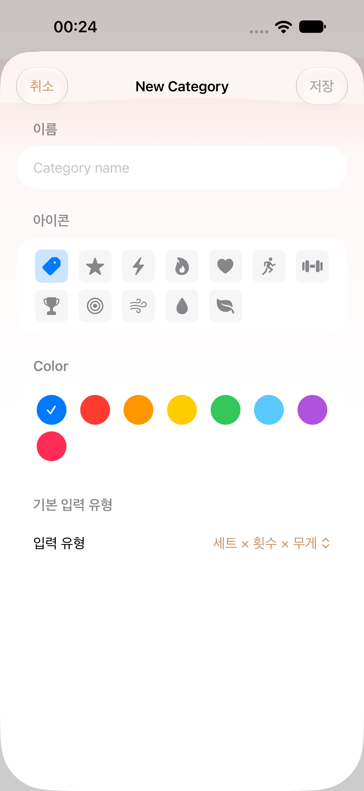
regular · historical
W30 actual-map older-source context
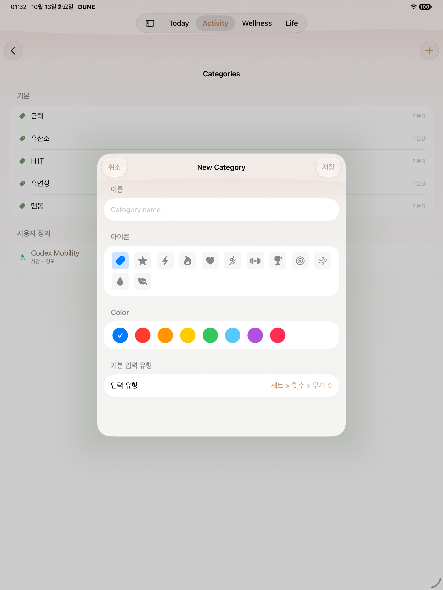
ipad · historical
W30 actual-map older-source context
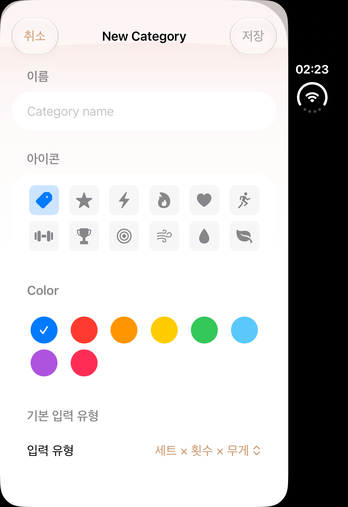
duo · historical
W30 actual-map older-source context
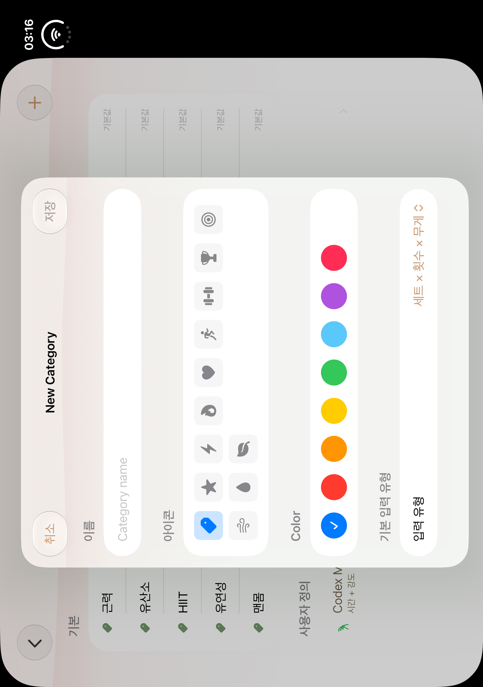
duo-open · historical
W30 actual-map older-source context
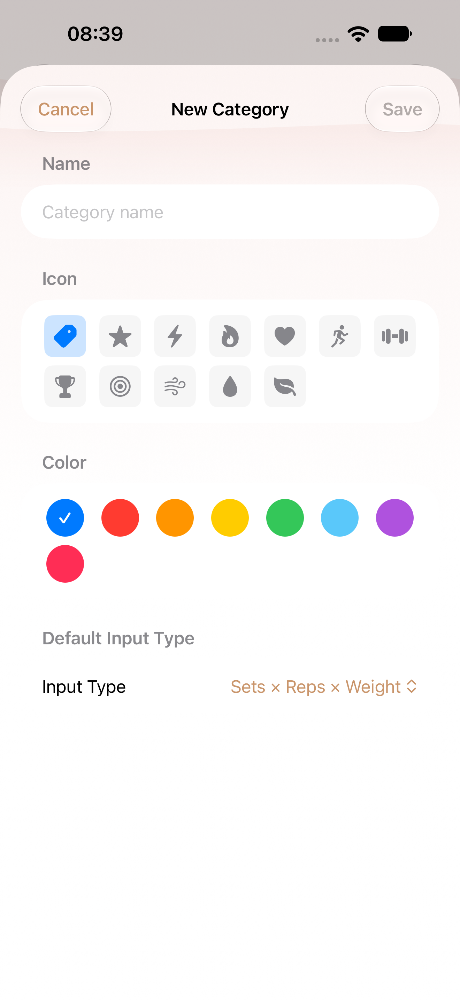
regular · after
W30 normal empty name and original icon choices
AX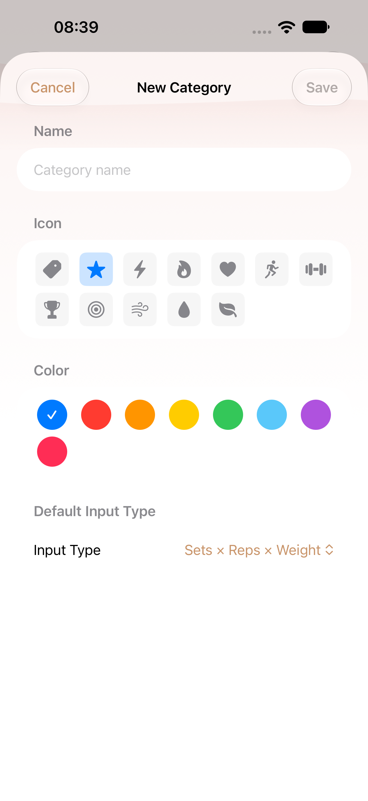
regular · after
W30 normal selected original icon choice
AXregular · after
W30 normal selected original color choice
AX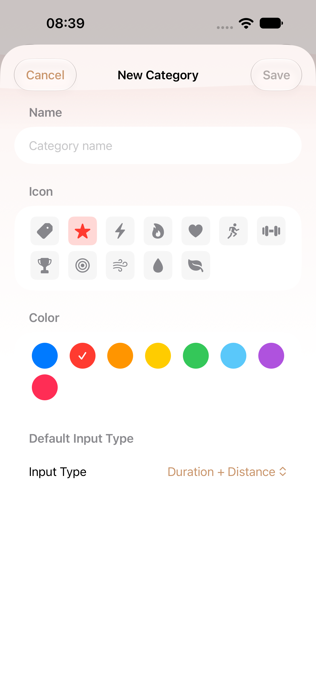
regular · after
W30 normal selected Duration and Distance input type
AX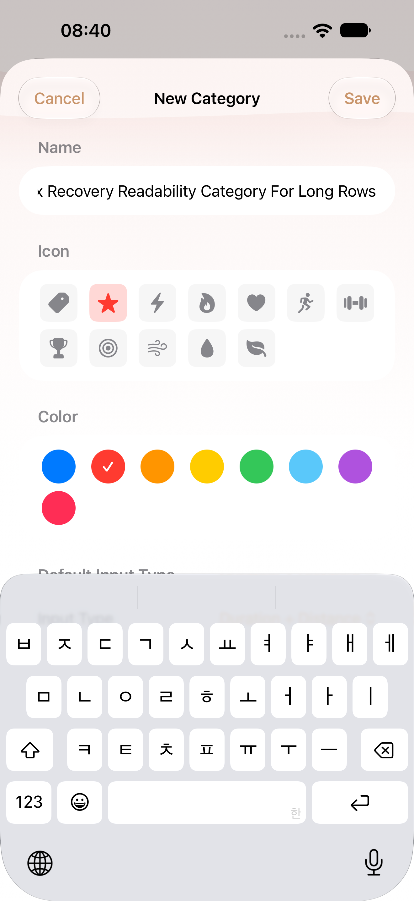
regular · after
W30 normal long name valid Save and editor
AX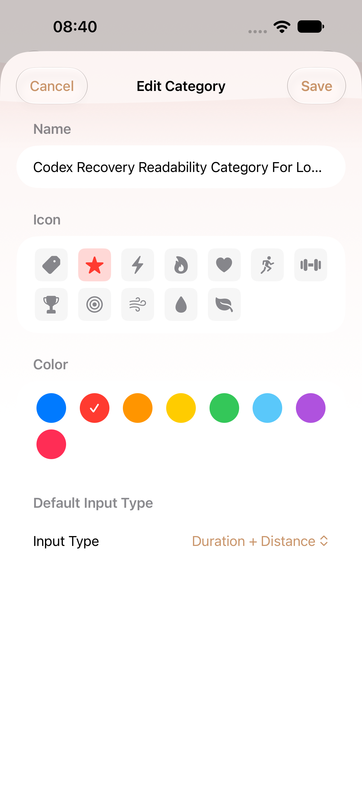
regular · after
W30 normal reopened custom category editor
AX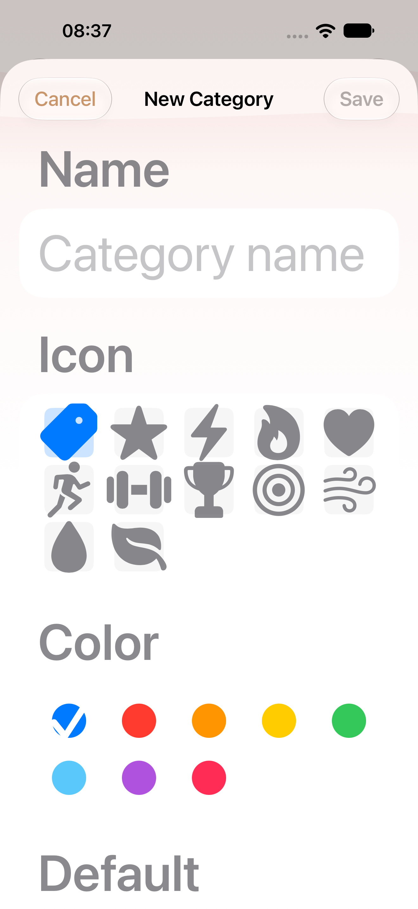
regular · after
W30 MAX empty name and original icon choices
AX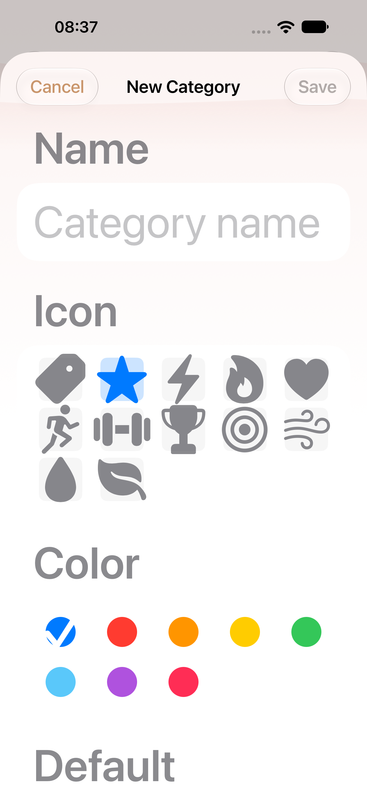
regular · after
W30 MAX selected original icon choice
AX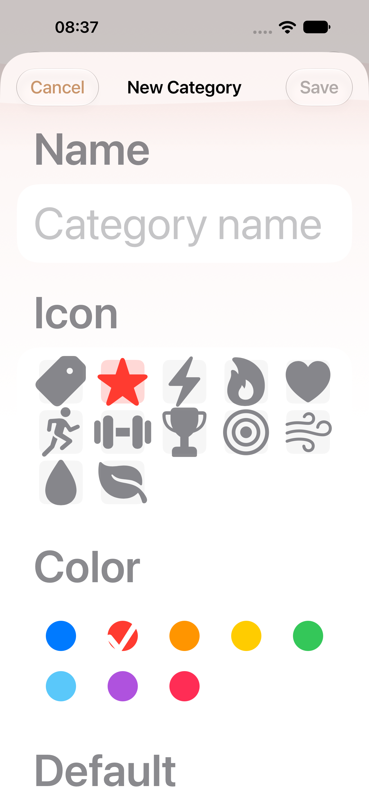
regular · after
W30 MAX selected original color choice
AX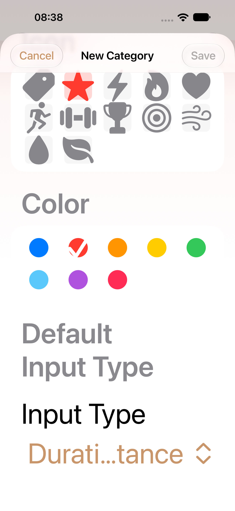
regular · after
W30 MAX selected Duration and Distance input type
AX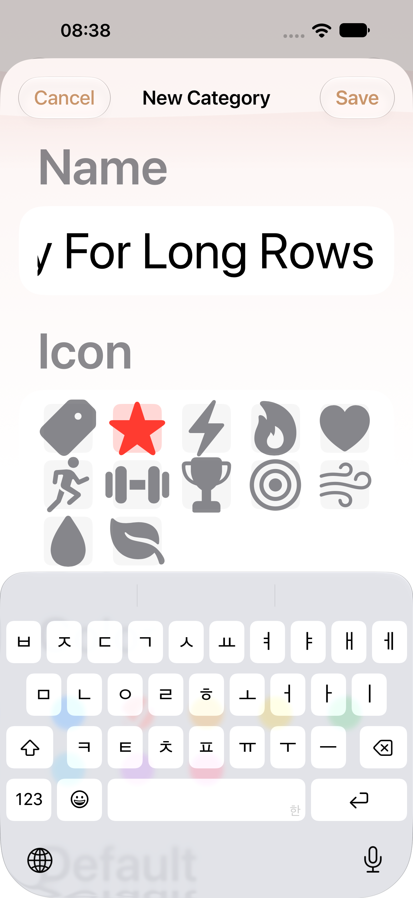
regular · after
W30 MAX long name valid Save and editor
AX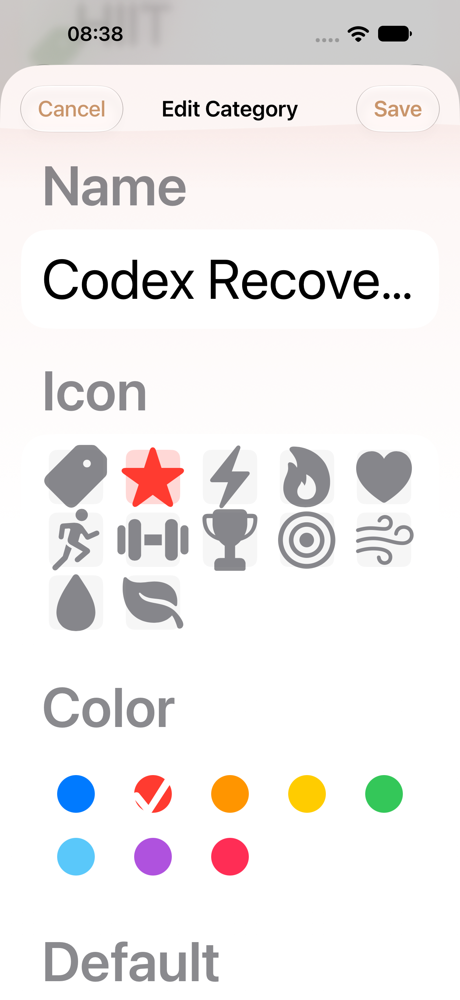
regular · after
W30 MAX reopened custom category editor
AXprovenance manifest